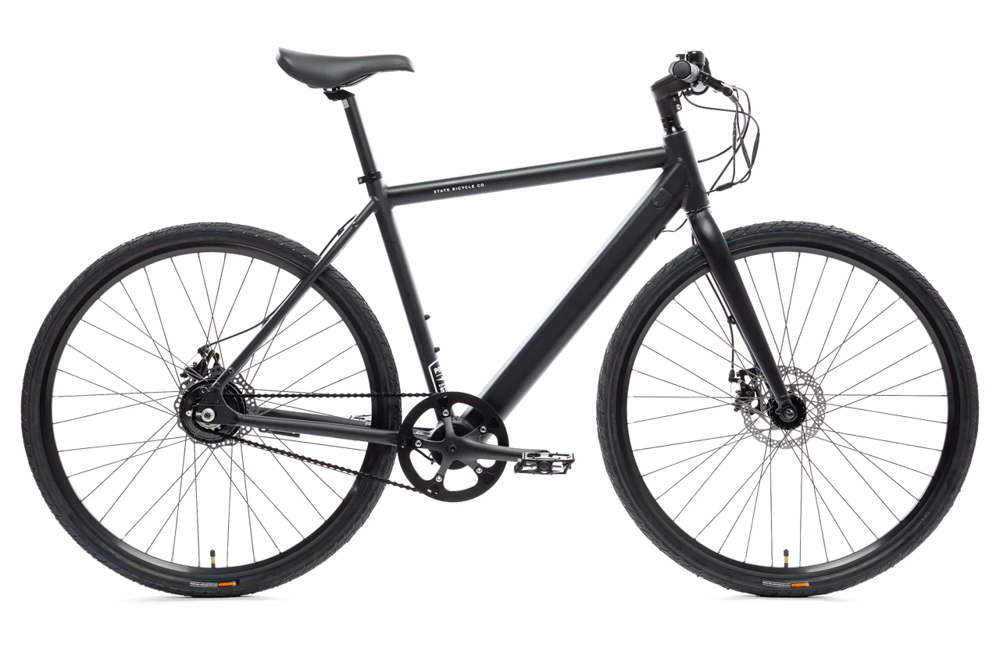
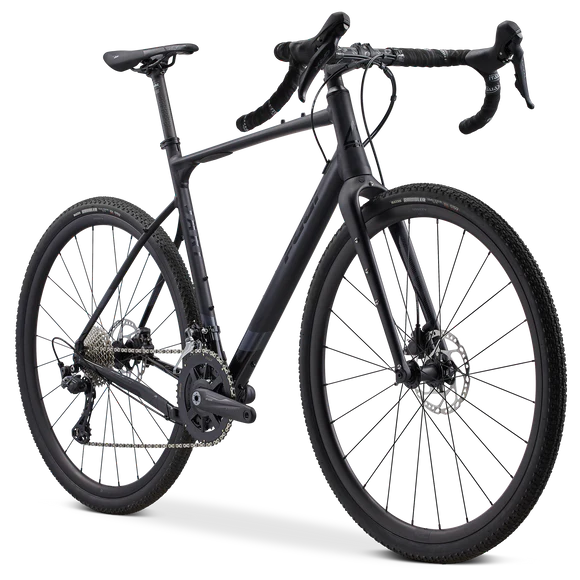
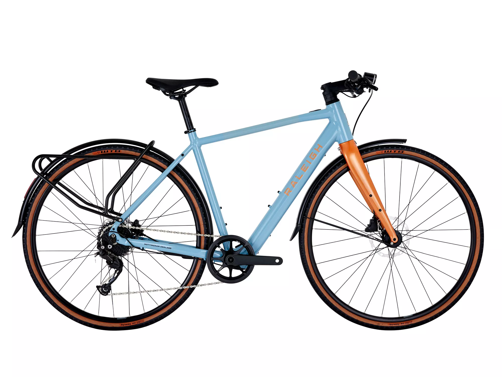

Велосипеды!
Весеннее утро пробуждается легким скрипом цепи и мягким журчанием колес. Велосипеды - магия движения под открытым небом. Педали впиваются в повороты, ветер играет с волосами, а сердце бьется в ритме велосипедных колес. Под каждым кругом педали - мгновение свободы и встречи с приключениями на каждом повороте дороги.


